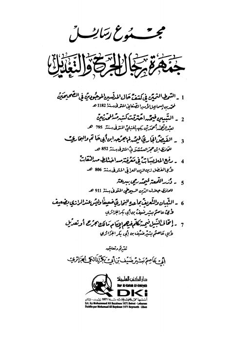

Downloads need an internet connection.
مجموع رسائل جمهرة رجال الجرح والتعديل
Authors: أحمد بن علي بن حجر العسقلاني جلال الدين عبد الرحمن السيوطي محمد بن إسماعيل الأمير الصنعاني عبد الرحيم بن الحسين العراقي ابن رجب الحنبلي بشير ضيف بن أبي بكر الجزائري
Editors: بشير ضيف بن أبي بكر الجزائري
Publishers: دار الكتب العلمية
**▫️ العنوان: مجموع رسائل جمهرة رجال الجرح والتعديل** ▪️ المؤلف: #الصنعاني • #ابن_رجب • #ابن_حجر • #العراقي • #السيوطي • #الجزائري ▫️ المحقق: #بشير_ضيف_الجزائري ▪️ الناشر: #دار_الكتب_العلمية ▫️ تاريخ النشر: 1432هـ 2011م ▪️ بلد النشر: بيروت، #لبنان ▫️ الطبعة: 1 ▪️ عدد الأجزاء: 1 ▫️ الصفحات: 287 ▪️ نوع الوعاء: #كتاب ▫️ التصنيف الرئيسي: #الحديث_وعلومه ▪️ التصنيف الفرعي: #الجرح_والتعديل ۪